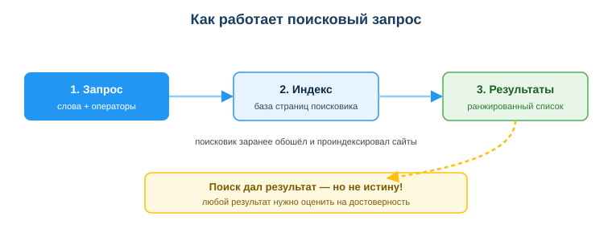
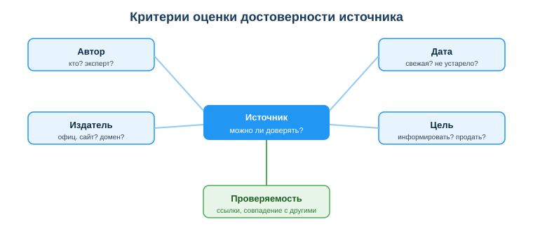

Дисциплина: Применение информационно-коммуникационных и цифровых технологий
Результат обучения: РО 2.1 — владение основами ИКТ · Объём темы: 2 часа
Квалификация: 4S06130103 «Разработчик программного обеспечения»
Представь обычный рабочий день. Ты пишешь код, запускаешь — и получаешь красную строку: ModuleNotFoundError: No module named 'pandas'. Что ты делаешь дальше? Если ты вобьёшь в поиск «не работает программа», поисковик честно выдаст тебе сотни ссылок: чьи-то истории, форумы десятилетней давности, рекламные статьи «топ-10 ошибок Python», видео на полчаса. Ты будешь перебирать их, открывать вкладку за вкладкой и потеряешь полчаса — а функцию так и не напишешь.
Рядом сидит коллега. У него та же ошибка, но он решает её за минуту. Он не ищет «по смыслу» — он копирует точный текст ошибки, добавляет название библиотеки и оператор site:stackoverflow.com, чтобы искать только там, где отвечают разработчики. Поиск сразу приводит его в нужное обсуждение, он смотрит на дату ответа, проверяет, что решение под его версию, и идёт дальше. Разница между вами — не в знании Python. Разница в том, что коллега умеет искать и проверять.
Это и есть тема занятия. Разработчик ищет в интернете постоянно — чаще, чем кажется новичку: как исправить ошибку, как работает незнакомый метод, какой подход выбрать, не сломается ли библиотека после обновления. Поиск для тебя — такой же рабочий инструмент, как редактор кода или терминал. Но у этого инструмента есть подвох: не всё, что в выдаче, — правда. В результатах вперемешку лежат устаревшие ответы, чужие нерешённые баги, рекламные тексты и всё чаще — выдуманные ИИ «факты», которые звучат уверенно, но не существуют. Поэтому навык делится на две половины: быстро найти нужное и трезво проверить найденное. Освоив обе, ты будешь решать задачи быстрее и реже встраивать в проект чужие ошибки [3; 4].
После изучения темы ты сможешь:
"…", site:, минус -, filetype: и другие — и понимать, какую задачу решает каждый;"…", site:, -, filetype:).Браузер кажется чем-то само собой разумеющимся: открыл, ввёл адрес, читаешь. Но для разработчика браузер — это не «программа для просмотра сайтов», а рабочее место, где ты проводишь значительную часть дня: ищешь решения, читаешь документацию, открываешь панель веб-разработчика, заходишь в облачные сервисы и репозитории. Чем осознаннее ты владеешь браузером, тем меньше теряешь времени и тем безопаснее работаешь.
Что именно происходит, когда ты вводишь адрес. Браузер берёт введённый адрес (URL), находит сервер, на котором лежит страница, запрашивает у него содержимое (текст, картинки, стили, скрипты) и отрисовывает их в окне. Тебе не нужно знать это в деталях прямо сейчас (веб-технологии разбираются отдельно), но важно запомнить одну вещь: страница, которую ты видишь, — это не «истина из интернета», а файл, который кто-то опубликовал. Любой человек может опубликовать что угодно. Поэтому красивая страница и правда — это не одно и то же.
Несколько возможностей браузера, которыми стоит пользоваться сознательно:
Главная мысль раздела: браузер — это инструмент, которым нужно управлять, а не просто «тыкать». Осознанная работа с вкладками, историей и расширениями экономит время и снижает риски.
Многие думают, что поисковик в момент запроса бежит по всему интернету и ищет твои слова. Это не так — иначе ответа пришлось бы ждать часами. На самом деле работа делится на два процесса, и понимание этого сразу делает тебя более грамотным в поиске. Посмотри на схему «Как работает поисковый запрос» (приложение А) — она показывает три шага, разберём каждый.

Шаг 0 (заранее, до твоего запроса): индексация. Поисковик постоянно, ещё до того как ты что-то ввёл, обходит сайты специальными программами-роботами, читает их содержимое и складывает в огромную упорядоченную базу — поисковый индекс. Грубая аналогия: индекс — это как алфавитный указатель в конце толстого учебника. Когда тебе нужно слово, ты не перечитываешь всю книгу — ты открываешь указатель и видишь, на каких страницах оно встречается. Поэтому поиск отвечает почти мгновенно, хотя сайтов миллиарды: он ищет не «по интернету», а по заранее подготовленному указателю [4].
Шаг 1: запрос. Ты вводишь слова и, если нужно, операторы. Это и есть твой «вопрос к указателю». От того, насколько точно ты сформулировал запрос, напрямую зависит, что найдётся. Расплывчатый запрос — расплывчатый ответ.
Шаг 2: поиск по индексу. Поисковик находит в индексе все страницы, подходящие под твой запрос. Таких страниц могут быть миллионы.
Шаг 3: результаты (выдача). Поисковик не вываливает миллионы ссылок как попало — он ранжирует их: ставит наверх те, которые считает наиболее подходящими и популярными. Вот ключевой момент, который нужно усвоить раз и навсегда: ранжирование идёт по релевантности и популярности, а не по правдивости. Поисковик не проверяет факты. Он отвечает на вопрос «какая страница лучше подходит под эти слова и чаще на неё ссылаются», а не «где написана правда». На той же схеме это подчёркнуто жёлтой плашкой: «Поиск дал результат — но не истину!». Поэтому даже первый результат в выдаче — это кандидат на ответ, а не сам ответ.
Что из этого следует лично для тебя:
Хороший запрос — это половина успеха. Большинство потерянного на поиск времени уходит не на чтение, а на то, что человек задаёт слишком общий вопрос и тонет в нерелевантных результатах. Разберём, как формулировать запрос так, чтобы попадать в цель.
Принцип 1: конкретизируй. Чем точнее слова, тем точнее выдача. Сравни два запроса по нашей ситуации из введения:
| Слабый запрос | Точный запрос |
|---|---|
| не работает программа | ModuleNotFoundError No module named pandas python |
| ошибка питон | "ModuleNotFoundError: No module named 'pandas'" python |
| как сделать таблицу | как создать DataFrame из словаря pandas python |
Видишь разницу? Слабый запрос описывает ощущение («не работает»), а точный — конкретный факт: текст ошибки, язык, библиотеку. Поисковик не понимает твоих переживаний — он работает со словами. Дай ему точные слова.
Принцип 2: используй операторы. Операторы — это «уточняющие команды» для поиска. Несколько самых полезных для разработчика:
"точная фраза" — ищет фразу целиком, ровно в таком виде, а не отдельные слова вразброс. Незаменимо для текста ошибки: "ModuleNotFoundError: No module named 'pandas'". Без кавычек поисковик может выдать страницы, где слова module и pandas встречаются по отдельности и не по теме.site: — поиск по конкретному сайту. site:stackoverflow.com ограничит выдачу площадкой, где отвечают разработчики; site:docs.python.org — только официальной документацией. Это один из самых мощных приёмов: ты сразу отсекаешь рекламу и мусор.- — исключить слово. python скачать -реклама -курсы уберёт из выдачи страницы с этими словами. Полезно, когда выдачу забивает что-то лишнее.filetype: — искать файлы определённого типа. filetype:pdf найдёт PDF-документы — удобно для официальных материалов, руководств, стандартов.pandas OR numpy установка найдёт страницы про любую из библиотек.Эти операторы можно комбинировать. Запрос из урока — образец грамотного поиска:
"ModuleNotFoundError: No module named pandas" python site:stackoverflow.comРазбери его по частям: точный текст ошибки в кавычках (ищем именно эту ошибку), слово python (отсекаем другие языки), site:stackoverflow.com (только площадка разработчиков). Один такой запрос экономит десятки минут перебора.
Принцип 3: учитывай язык запроса. По технической теме на английском результатов обычно больше, и они свежее, потому что разработчики со всего мира обсуждают код по-английски и ближе к первоисточникам (документация чаще выходит сначала на английском). Не бойся искать по-английски — даже если читаешь с трудом, точный текст ошибки одинаков на любом языке.
Принцип 4: читай дату. Технологии меняются: синтаксис библиотек, методы, рекомендации устаревают. Ответ 2015 года может быть верным для своего времени и неработающим сегодня. Прежде чем брать решение, посмотри, когда оно написано, и под какую версию. К дате мы ещё вернёмся в разделе про достоверность — это один из ключевых критериев.
Практический алгоритм запроса (применяй с первого дня):
site: или отсеки лишнее через -.Зачем вообще оценивать источники, если поиск уже что-то нашёл? Потому что, как мы выяснили в 4.2, поиск отбирает страницы по релевантности, а не по правдивости. Поиск находит много — твоя задача отобрать те, которым можно верить. Это отдельный навык, и он называется информационная грамотность — одна из базовых цифровых компетенций по европейской рамке DigComp 2.2 (область «Информационная и цифровая грамотность»: умение искать, фильтровать, оценивать и управлять данными и информацией) [6].
Ключевая установка: не существует «правды из интернета» — есть источники разного качества. Один и тот же факт может быть подан точно (в документации) и искажённо (в рекламной статье). Поэтому ты оцениваешь не «интернет вообще», а каждый конкретный источник по понятным признакам. Этим займёмся в следующем разделе.
Чтобы оценка не была интуитивной («вроде нормальный сайт»), пользуйся пятью критериями. Посмотри на схему «Критерии оценки достоверности источника» (приложение Б): в центре — источник и вопрос «можно ли доверять?», вокруг — пять признаков, по которым ты отвечаешь. Разберём каждый с примерами.

1. Автор — кто это написал?
Спроси: указан ли автор и кто он? Эксперт, организация, специалист в теме — или аноним? Серьёзный материал обычно подписан, у автора есть имя, должность, профиль. Анонимность сама по себе не делает текст ложным, но лишает тебя возможности понять, насколько человек разбирается в теме.
2. Дата — когда это опубликовано?
Спроси: свежий ли материал и не устарел ли он для твоей задачи? В технике это критично: API библиотек, синтаксис, рекомендации по безопасности меняются. Решение 2014 года может ссылаться на функцию, которой уже нет.
3. Издатель — где это опубликовано?
Спроси: что за площадка, какой домен, официальный ли это сайт? Документация на официальном сайте технологии надёжнее, чем тот же текст, пересказанный на безымянном блоге с обилием рекламы. Обрати внимание на домен: docs.python.org, developer.mozilla.org, learn.microsoft.com, adilet.zan.kz — это официальные источники.
4. Цель — зачем это написано?
Спроси: текст хочет информировать тебя или что-то тебе продать / убедить любой ценой? Цель влияет на содержание. Рекламная статья подсветит плюсы и умолчит о минусах; материал, который гонится за кликами, выберет громкий заголовок вместо точности.
5. Проверяемость — можно ли это подтвердить?
Самый сильный критерий, на схеме он выделен отдельно. Спроси: приводит ли источник ссылки на первоисточники? Совпадают ли его утверждения с другими независимыми источниками? Проверяемый факт — тот, который ты можешь подтвердить в другом надёжном месте.
Собрав критерии вместе, ты получаешь компактную таблицу-ориентир (она же в уроке):
| Признак надёжности | Признак сомнительности |
|---|---|
| официальная документация, свежая дата | нет автора и даты |
| автор-эксперт, ссылки на источники | громкие заголовки, эмоции |
| совпадает с другими источниками | противоречит остальным |
| проверяемые факты | «сенсация», призыв срочно действовать |
Запомни короткую формулу всей оценки: кто, когда, зачем — и можно ли проверить. Четыре вопроса, которые отделяют источник, на который можно опереться, от того, который заведёт тебя в тупик.
Не все надёжные источники одинаково полезны — у них есть «иерархия доверия». Держи её в голове, когда ищешь техническое решение.
docs.python.org), веб-технологии (MDN, developer.mozilla.org), продукты Microsoft (learn.microsoft.com), библиотеки pandas/NumPy на их официальных сайтах. Документация пишется авторами технологии, обновляется под версии и проверяема. Если документация и форум противоречат друг другу — верь документации.Практический вывод: начинай и заканчивай проверку документацией. Форум и ИИ помогают быстро найти направление, но окончательное подтверждение бери у первоисточника.
Две самые частые причины, по которым найденное «не работает» или оказывается ложным.
Ловушка 1: устаревший ответ. Технология ушла вперёд, а ответ остался в прошлом. Классический мини-кейс из урока: студент скопировал решение с форума 2014 года, а оно не сработало в новой версии библиотеки — изменился API (набор функций и их поведение). Код, который был верным десять лет назад, сегодня может вызывать ошибку или вести себя иначе. Защита простая: смотри дату ответа и сверяйся с актуальной документацией под свою версию. Если решение старое — проверь, не появилось ли нового способа.
Ловушка 2: галлюцинация ИИ. ИИ-ассистент генерирует правдоподобный текст, а не проверенный факт: он предсказывает наиболее вероятное продолжение, а не сверяется с реальностью. Поэтому ИИ может уверенно назвать функцию, которой нет в библиотеке, придумать несуществующий параметр или сослаться на закон с неверными реквизитами — и сделать это убедительным тоном. Опасность именно в уверенности: новичок верит, потому что «звучит правильно».
adilet.zan.kz.Общий принцип для обеих ловушек: ИИ и форум помогают быстрее найти черновик ответа, но подтверждение всегда берётся у надёжного первоисточника, а не у них. Этот навык — критическое мышление при работе с информацией — для тебя теперь рабочая привычка, а не теория.
Поиск и проверка — это половина темы; вторая половина — работать в браузере так, чтобы не навредить себе. Несколько практичных правил.
Связь с профессией: разработчик работает в браузере с репозиториями, облаком, документацией и сервисами, где есть доступы. Аккуратность в браузере — часть профессиональной цифровой гигиены, а не «настройки для галочки».
Пример 1 — слабый запрос превращаем в точный. Ситуация из введения: ошибка ModuleNotFoundError: No module named 'pandas' в Python.
Слабо: не работает программа — описывает ощущение, выдаёт сотни нерелевантных ссылок.
Точно: "ModuleNotFoundError: No module named pandas" python site:stackoverflow.com.
Разбор: точный текст ошибки в кавычках (ищем именно её), слово python (отсекаем другие языки), site:stackoverflow.com (только площадка разработчиков). Один запрос вместо получаса перебора. Это и есть разница между тобой и «коллегой за минуту».
Пример 2 — два источника по одной теме. Даны: официальная документация 2025 года и пост на форуме без автора и даты с громким заголовком «СРОЧНО! Этот трюк сломает ваш код».
Разбор по критериям: автор — у документации команда технологии, у поста никого; дата — у документации свежая, у поста нет вовсе; издатель — официальный сайт против безымянного форума; цель — информировать против «собрать клики»; проверяемость — документацию подтвердят другие источники, пост нигде. По всем пяти критериям надёжнее документация. Минимум три признака для ответа: авторство, дата, проверяемость.
Пример 3 — устаревший код с форума. Студент нашёл готовый код на форуме 2014 года и сразу вставил в проект 2026 года.
Разбор: риски — устаревший API и синтаксис (функция могла исчезнуть или изменить поведение), возможные скрытые ошибки и уязвимости, и главное — он не понимает, как код работает, поэтому не сможет его починить. Правильно: посмотреть дату, свериться с актуальной документацией под текущую версию, прочитать и понять код до вставки.
Пример 4 — галлюцинация ИИ. ИИ-ассистент уверенно назвал функцию, которой нет в библиотеке, и привёл пример её использования.
Разбор: это галлюцинация — ИИ выдал правдоподобный, но ложный ответ. Как обнаружить: открыть официальную документацию библиотеки и поискать эту функцию. Нет в документации — значит, выдумка. Вывод: ответ ИИ — это черновик, который проверяется у первоисточника, а не готовая истина.
adilet.zan.kz для норм закона."…", site:, -)."…", site:, -, filetype:) экономят часы.ModuleNotFoundError: No module named 'pandas'. Какие операторы добавишь и зачем?"…", site: и -? Приведи по примеру."…", site:, -, filetype:).Основная литература:
3. Шыныбеков Д.А., Ускенбаева Р.К. Информационно-коммуникационные технологии. — Алматы, 2017 (глава «Сети и работа с информацией»).
Дополнительно:
Нормативные источники РК:
2. Закон РК «О персональных данных и их защите» от 21.05.2013 № 94-V — https://adilet.zan.kz/rus/docs/Z1300000094
7. Закон РК «Об информатизации» от 24.11.2015 № 418-V — https://adilet.zan.kz/rus/docs/Z1500000418
Электронные ресурсы и документация:
4. Операторы поиска Google (официальная справка) — https://support.google.com/websearch/answer/2466433
Международные рамки:
5. IFLA. Как распознавать фейковые новости / критерии оценки источников — https://www.ifla.org/publications/node/11174
6. DigComp 2.2: The Digital Competence Framework for Citizens (JRC, ЕС), область «Информационная и цифровая грамотность» — https://publications.jrc.ec.europa.eu/repository/handle/JRC128415
assets/11_shema-kak-rabotaet-poisk.svg. Читается слева направо: 1. Запрос (слова + операторы) → 2. Индекс (заранее собранная база страниц поисковика) → 3. Результаты (ранжированный список). Жёлтая плашка внизу напоминает главное: «Поиск дал результат — но не истину!» — любой результат нужно оценить на достоверность.
assets/11_shema-kriterii-dostovernosti.svg. В центре — источник и вопрос «можно ли доверять?», вокруг — пять критериев: автор (кто? эксперт?), дата (свежая? не устарело?), издатель (офиц. сайт? домен?), цель (информировать? продать?) и выделенная отдельно проверяемость (ссылки, совпадение с другими). Используй её как чек-лист при оценке любого источника.
Материал подготовлен на основе урока темы (urok.md) и приведённых в конце источников; он расширяет и углубляет содержание урока для самостоятельного изучения. Источники приведены главами и ссылками (без номеров страниц); нормативные акты — с реквизитами.
Разработал: преподаватель ИКТ, магистр управления и информационной безопасности Калиаскаров Д.А.
Материал одобрен к использованию в обучении решением Педагогического совета ТОО «Колледж Хекслет Казахстан».